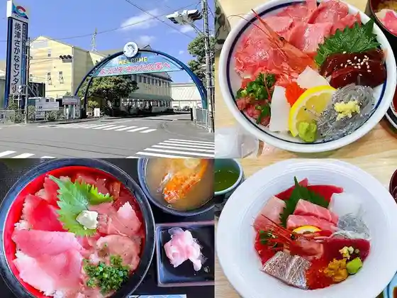
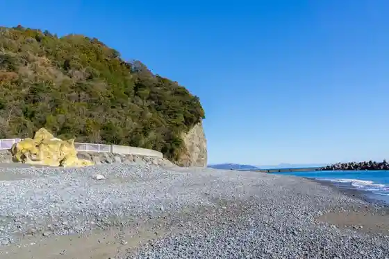
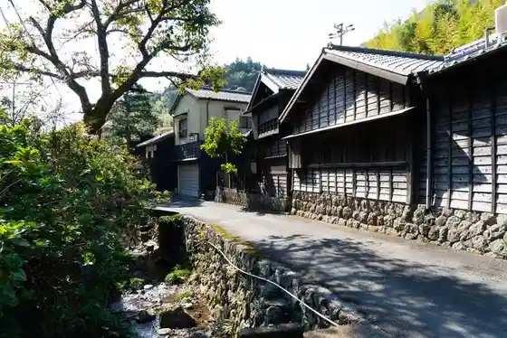

Yaizu
Yaizu · Shizuoka
Yaizu
Highlighted on the Shizuoka map.
Sights
Yaizu Sakana Center

Hama to Me Beach

Hanazawa Village

Shinso Mizu Museum
Man Kan Mine
Disukabarii Park Yaizu
Umie Ru Yaizu
Ekichika Onsen
Chokuei Shokudo (Sakura)